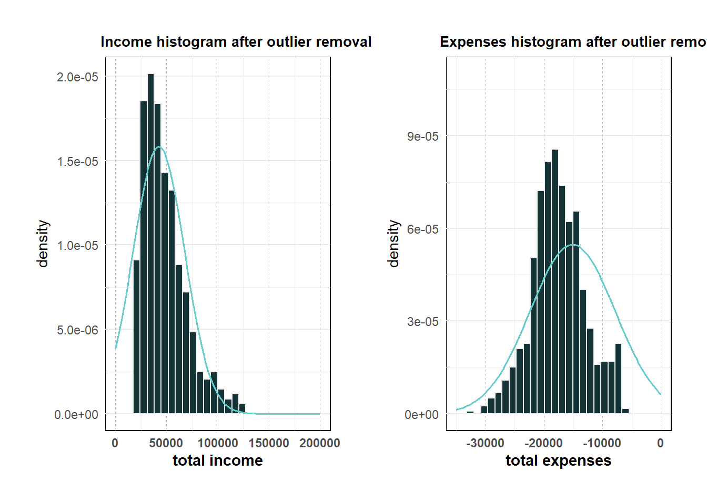

pacman::p_load(patchwork, tidyverse, ggstatsplot, ggdist, gganimate, png, gt,plotly, ggstatsplot, ggside, parameters,rstatix,reshape2, gridExtra,ggpmisc)Take-home_Ex1
Take home exercise 1
The Task
In this take-home exercise, you are required to apply the concepts and methods you had learned in Lesson 1-4 to reveal the demographic and financial characteristics of the city of Engagement byusing appropriate static and interactive statistical graphics methods. This exercise requires a user-friendly and interactive solution that helps city managers and planners to explore the complex data in an engaging way and reveal hidden patterns.
Load packages and read datasets
fin_data <- read_csv("data/FinancialJournal.csv")
part_data <- read_csv("data/Participants.csv")Data cleaning and preparation
change data types
#change participantId to characters fin_data$participantId <- as.character(fin_data$participantId) part_data$participantId <- as.character(part_data$participantId) #change education level to ordinal part_data$educationLevel <- factor(part_data$educationLevel, ordered=TRUE, levels=c("Low", "HighSchoolOrCollege", "Bachelors","Graduate"))change timestamp
#save the datetime into date and month 2 formats fin_data$timestamp <- format(as.Date(fin_data$timestamp), "%Y-%m-%d") fin_data$Month <- format(as.Date(fin_data$timestamp), "%m")create a new table by converting financial journal to wide format, with each participant’s total amount for each category returned.
# Convert financial journal to wide format wide_fin <- pivot_wider(fin_data, id_cols = participantId, names_from = category, values_from = amount, values_fn = sum) # fill in NA with 0s (no transaction) in the resultant table wide_fin[is.na(wide_fin)] <- 0join the wide format financial journal table with the participant table to gain more insights
merged_df <- merge(part_data, wide_fin, by = 'participantId')calculate sum of all categories
merged_df$expenses <- rowSums(merged_df[, c("Education", "Food", "Recreation","Shelter")]) merged_df$income <- rowSums(merged_df[, c("RentAdjustment","Wage")]) merged_df$sum <- rowSums(merged_df[, c("Education", "Food", "Recreation","RentAdjustment","Shelter","Wage")]) head(merged_df)participantId householdSize haveKids age educationLevel interestGroup 1 0 3 TRUE 36 HighSchoolOrCollege H 2 1 3 TRUE 25 HighSchoolOrCollege B 3 10 3 TRUE 48 HighSchoolOrCollege D 4 100 2 FALSE 29 Low F 5 1000 1 FALSE 56 Graduate B 6 1001 1 FALSE 49 Graduate C joviality Wage Shelter Education RentAdjustment Food Recreation 1 0.001626703 109816.59 -7214.852 -494.0699 0 -3141.976 -4384.0672 2 0.328086500 96374.93 -7214.852 -494.0699 0 -3167.336 -6637.5107 3 0.557176006 79303.82 -7291.713 -166.5618 0 -4741.141 -3088.0366 4 0.142686163 46918.02 -7765.816 0.0000 0 -3695.506 -4425.2218 5 0.983012498 29292.89 -6716.578 0.0000 0 -5987.265 -6466.7517 6 0.043433461 46233.82 -5920.099 0.0000 0 -3197.202 -211.6989 expenses income sum 1 -15234.965 109816.59 94581.62 2 -17513.769 96374.93 78861.16 3 -15287.452 79303.82 64016.37 4 -15886.543 46918.02 31031.47 5 -19170.594 29292.89 10122.29 6 -9328.999 46233.82 36904.82Normality check

qq <- ggplot(merged_df, aes(sample=joviality))+stat_qq()+stat_qq_line()
sw_t <- merged_df%>%
shapiro_test(joviality)%>%
gt()qq <- ggplot(merged_df, aes(sample=sum))+stat_qq()+stat_qq_line()
sw_t <- merged_df%>%
shapiro_test(sum)%>%
gt()We can see that the points from both joviality and financial summary (sum) deviate significantly from the straight diagonal line, this is a clear indication that joviality is not normally distributed.
outlier removal
This step is to remove “expenses” and “income” outliers. (to retain more data, I adjusted the 75%/25% quantile (Q3/Q1) to 90% /10% quantile in the outlier formula respectively.
# Calculating the upper limit and Interquartile range for "expenses" and "income" IQR_income = IQR(merged_df$income) IQR_exp = IQR(merged_df$expenses) income_upper = quantile(merged_df$income,probs = 0.9)+1.5*IQR_income exp_lower = quantile(merged_df$expenses,probs = 0.1)-1.5*IQR_exp # Filtering out the outliers merged <- merged_df %>% filter ((income <= income_upper) & (expenses >= exp_lower))
Interesting insights
Does have kids make a big difference in family overrall expenses?
Is there any difference in the expense contribution for different age groups?
Is there any difference in the expense contribution for different housesize?
Does higher education level lead to higher wage? box plot?
which factor has the best correlation with joviality?
# Define the y variable y_var <- merged$joviality # Define the x variables x_vars <- merged[, c("Education", "Food", "Recreation","RentAdjustment","Shelter","Wage")] # Reshape the data to long format df <- reshape2::melt(cbind.data.frame(x_vars, y_var), id.vars = "y_var") # Create the plot ggplot(df,aes(x = value, y = y_var)) + geom_point(size = 1) + coord_cartesian(ylim=c(0, 1))+ geom_smooth(method = "lm") + facet_wrap(~ variable, scales = "free_x", ncol = 3) + labs(x = NULL, y = "joviality") + ggtitle("joviality correlation scatter plot") + theme(plot.margin = margin(1, 1, 1, 1, "cm"))
# Fit a linear regression model #model <- lm(y ~ x) # Create scatter plot with linear regression line and R-squared value # ggplot(data = data.frame(x, y)) + # geom_point(aes(x = x, y = y)) + # geom_smooth(method = "lm", se = FALSE, aes(x = x, y = y)) + # stat_poly_eq(formula = y ~ x, aes(label = paste(stat(eq.label), stat(rr.label), sep = "*\", \"*"))) + # labs(x = "X", y = "Y") + # theme_bw()expense pie chart or proportion of expenses by age grp.
animation by time
??